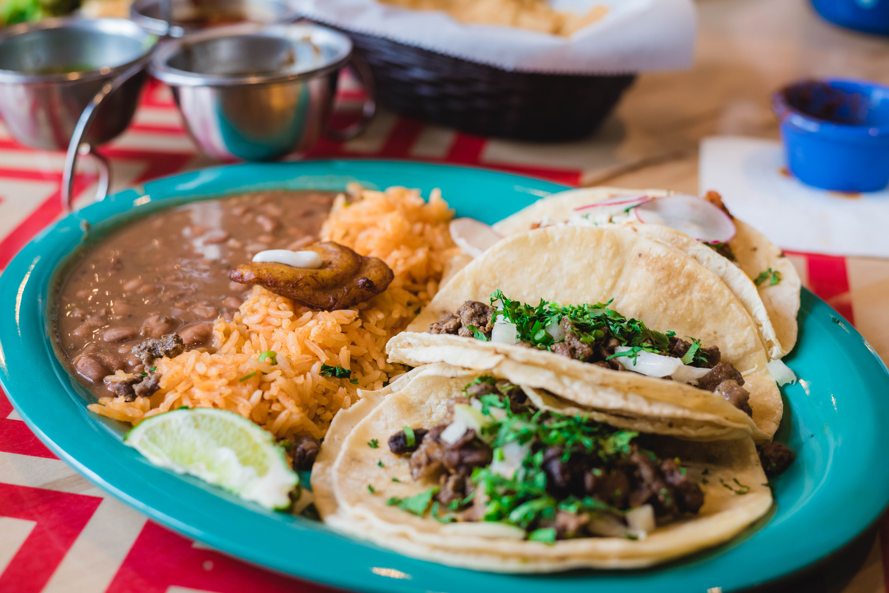
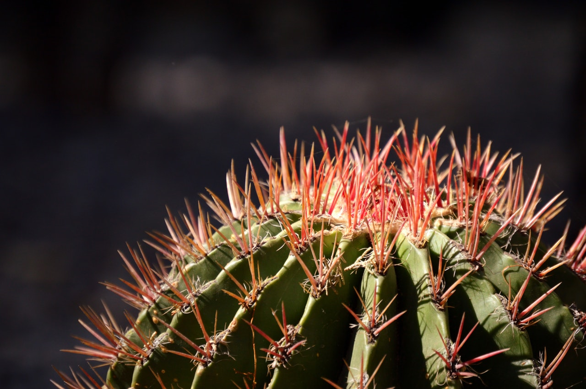
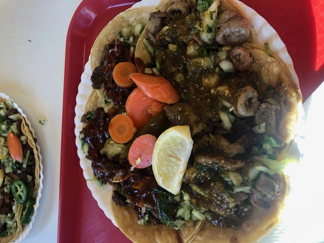

Hello my name is Jose Rosillo I like sports, traveling, and tacos. However, one of my favorite hobbies that I enjoy almost on the daily is cooking. Im going to be honest, it was not my cup of tea to begin with especially when i kept burning my fingers flipping tortillas as I was younger. Learning from my family was a big influence as it taught me a lot of things while i was crafting my skills through trial and error such as patience, discipline, and joy. There are many types of foods and dishes to make yet my go to specialty would be mexican food, especially the tacos. Why cooking? only five simple reasons.. Its fun, delicious, good for the body, the soul, and the praise of your masterpiece.
  To make simple tacos you will need 5 easy ingredients

Many styles and different types of tacos (and other dishes too) can vary throughout the world from kitchen to kitchen, people to people the taco is a universal symbol. You can try out different ingredients, meats, and spices to further develope your taste buds or creativity. Still not confident your taco will be good? below is a more visual in depth step by step to help and further understand the creation of this masterpiece. Overall, Tacos is one of the most popular dishes in Mexican food and culture and once you start liking creating delicious plates, your family and friends will thank you and enjoy eating all that passion and hard work that we simply call food.